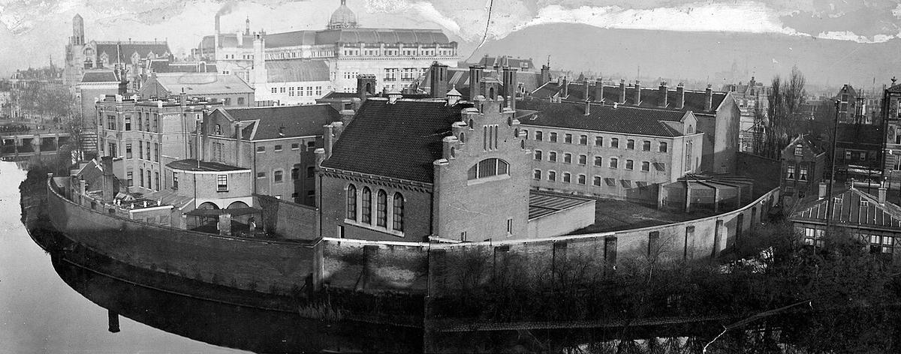
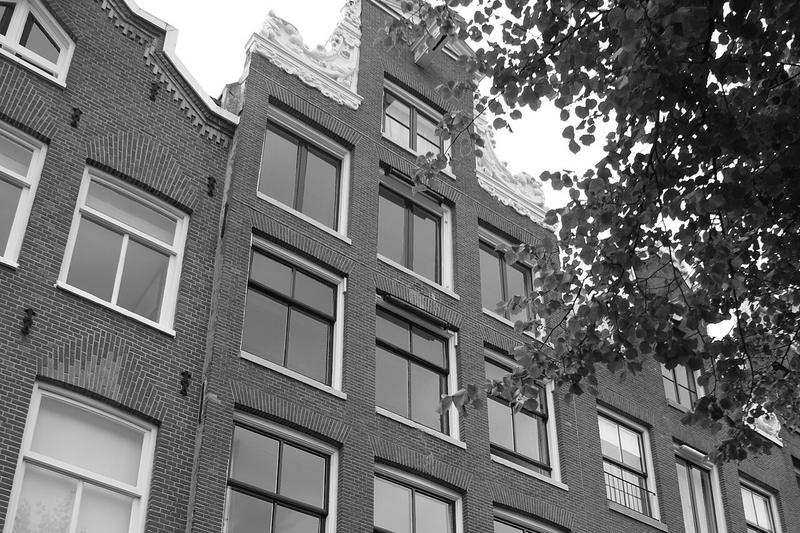
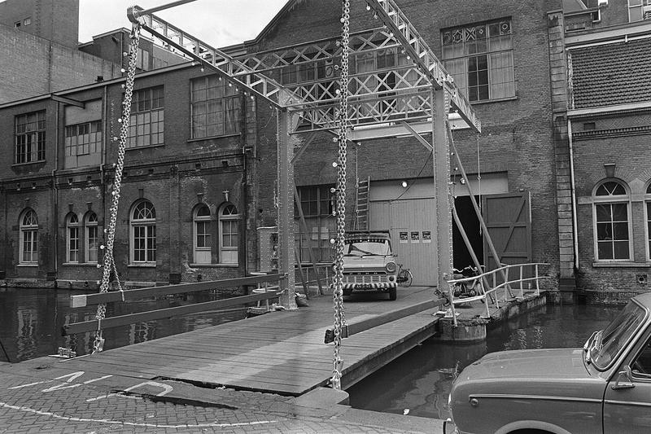
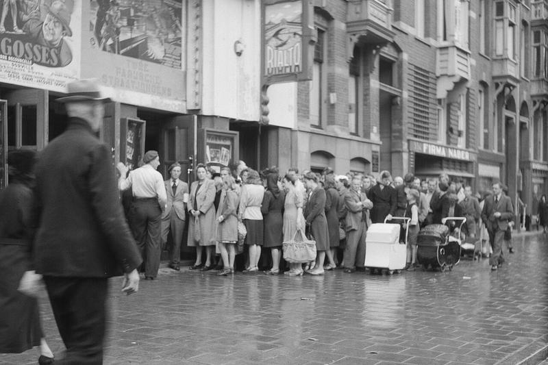

In 1972 adverteert Het Parool met "cinema Octopus" op Keizersgracht 138. Vanaf 1974 schrijven de kranten "Zienema Oktopus". In 1980 vertelt Herman Meerman, die er toen werkte, hoe het begon. [1][2][7]
Meerman bij Oktopus bevestigd Hahn en Tuindorp Films niet
De Waarheid noemt Herman Meerman in 1980 "werkend bij deze zienema". Chris Hahn staat in deze jaren in programma's van de Melkweg, maar geen gevonden bron koppelt hem aan Oktopus. De naam Tuindorp Films komt in dit materiaal niet voor. [7][4]
Begin
Meerman in 1980: "Filmhuis Oktopus is in 1970 begonnen. De eerste tijd zijn we veel verhuisd. In 1972 zijn we bij Oktopus ingetrokken." Oktopus was volgens hem een experimenteel centrum met subsidie van het Bureau Jeugdzaken. Er was jazz, later ook film en zeefdruk. [7]
Programma
NRC Handelsblad noemt Wiseman, de Cinema Novo, Van de Staak, oude Japanse films, Van der Keuken en de Godard van na 1968. "Al zaten er maar twee mensen in de zaal (...) Oktopus draaide door." De zaal was een souterrain met harde stoelen. [6]
Einde in 1980
De gemeente stopte de subsidie voor een filmhuis in een jongerencentrum. Oktopus ging op in het Amsterdams Filmhuis, sinds september 1979 een samenwerking met Filmhuis Akhnaton. In november 1980 opende dat in de voormalige kapel van het Huis van Bewaring. [6]

Het Huis van Bewaring aan de Weteringschans, 1915. In de voormalige kapel opende in 1980 het Amsterdams Filmhuis. Fotograaf onbekend, Spaarnestad Photo, publiek domein.
02 / De mensen
Namen in de krantenarchieven.
De vermeldingen komen uit Delpher, het krantenarchief van de KB. De tekst is met OCR gelezen en waar nodig op de krantenpagina gecontroleerd. Dat het om dezelfde Meerman en Hahn gaat als bij Tuindorp Films, zeggen de bronnen niet letterlijk. Hun namen staan in 1977 wel samen in één aankondiging.

Keizersgracht 138, het adres van Zienema Oktopus. Foto Rudolphous, 2011, CC BY-SA 3.0.Filmhuis en camera
Herman Meerman
In 1980 noemt De Waarheid hem en Lennie Zwierink van Filmhuis Akhnaton "twee stuwende krachten achter het Amsterdamse Filmhuis". [7]
Het Nederlands Film Festival vermeldt hem als cameraman bij twee films van Frans van de Staak uit 1981 en 1982 en als geluidsman bij De weg naar het zuiden van Johan van der Keuken. [15]
In december 1983 staat zijn naam onder een advertentie "Filmers solidair met bezettende beeldende kunstenaars", met onder anderen Van de Staak, Heddy Honigmann en Van der Keuken. [13]

De ingang van de Melkweg in juli 1970. Foto Rob Mieremet, Anefo, Nationaal Archief, CC0.Film en Melkweg
Chris Hahn 1939 tot 2021
Op 30 maart 1977 programmeert de Melkweg "Arbeidersfilms en -dia's: dia's over werk, staking etc., met diskussie van Herman Meerman en Chris Hahn (1977)". Daarna volgen films van onder anderen Joris Ivens. [4]
In februari 1982 schrijft De Waarheid dat Hahn "vanaf juli" voor de Melkweg 8mm-journaals maakte over actuele gebeurtenissen. In 1983 toont de Melkweg twee titels met zijn naam: Amsterdam en Hembrug. [10][12]
Filmkrant: Hahn regisseerde De directeur (1978). Van de Staak is erin te zien als acteur. [19]

Rialto in 1945. Hier vertoonde het Amsterdams Filmhuis vanaf 1982. Foto Anefo, Nationaal Archief, CC0.Filmhuis en distributie
Rieks Hadders
De tip noemde "Riks" en "Hadders". In de kranten komen die samen voor als één naam: Rieks Hadders. In 1974 schrijft NRC Handelsblad over "Rieks Hadders, van de Amsterdamse filmclub Zienema Oktopus", als enige met ervaring in publieksdiscussies. [2]
In 1982 is hij medewerker van het Amsterdams Filmhuis, dat toen in Rialto-Rivoli vertoonde. In 1988 noemt Trouw hem hoofd distributie van het Filmmuseum. [11][14]
Een directe vermelding van Hadders samen met Meerman of Hahn is niet gevonden.
FS.
Filmmaker
Frans van de Staak overleden 2001
Oktopus startte in januari 1977 een programma met Van de Staak en Johan van der Keuken, met de première van Meine Heimat. In januari 1979 bracht Oktopus een avond Van de Staak met de première van Optocht. [3][5]
In 1980 schrijft De Waarheid dat Van de Staak zijn bekendheid dankt aan "het pionierswerk van Zienema Oktopus". Hij komt aan het woord in het gedenkboek 10 jaar Oktopus. [8]
Hij produceerde De overkant (1982), waarvoor Meerman de camera deed. Zie het hoofddossier.
03 / Tijdlijn
Van Keizersgracht naar Rialto.
Alleen data die een bron noemt. Gebeurtenissen zonder Meerman, Hahn of Hadders staan erin als ze het verloop van het filmhuis verklaren.
1970
Begin van Filmhuis Oktopus, volgens Meerman in 1980. Eerst op wisselende plekken. [7]
1972
Intrek in jongerencentrum Oktopus. Het Parool kondigt een film van de Marx Brothers aan in "cinema Octopus", Keizersgracht 138, toegang ƒ 2. [7][1]
1974
Rieks Hadders van "filmclub Zienema Oktopus" in een NRC-artikel over het nieuwe Vrije Circuit van filmhuizen. [2]
1977
Januari: programma Van de Staak en Van der Keuken in Oktopus. Maart: avond over arbeidersfilms in de Melkweg, met discussie van Meerman en Hahn. [3][4]
1978
Chris Hahn regisseert de korte film De directeur, met Van de Staak als acteur. [19]
1979
Januari: première van Optocht van Van de Staak in Oktopus. September: het Amsterdams Filmhuis ontstaat op papier, als samenwerking van Oktopus en Akhnaton. [5][6]
1980
November: het Amsterdams Filmhuis opent een zaal met 110 stoelen in de kapel van het voormalige Huis van Bewaring. Oktopus sluit af met het gedenkboek 10 jaar Zienema Oktopus en een programma met de beste Oktopusfilms. [6][9]
1981 en 1982
Meerman is cameraman bij Er gaat een eindeloze stoet mensen door mij heen en Op uw akkertje van Van de Staak, en bij De overkant van Heddy Honigmann. Hahn maakt 8mm-journaals voor de Melkweg. [15][16][18][10]
1982
Het Amsterdams Filmhuis vertoont in Rialto. Rialto zelf schrijft dat de Stichting Amsterdams Filmhuis in 1982 het gebouw betrok. [11][20]
1983
Nederlandse week in de Melkweg met Amsterdam en Hembrug van Chris Hahn, en twee films van Van de Staak. Meerman tekent de solidariteitsadvertentie van filmers. [12][13]
04 / Credits van Meerman
Achter de camera bij Van de Staak.
Het Nederlands Film Festival noemt Herman Meerman bij vier films uit 1981 en 1982. De overkant staat al in het hoofddossier. Hieronder de andere drie. Geen van deze films is een productie van Tuindorp Films. [15]
1981Camera
Regie Frans van de Staak · productie Rolf Orthel
Er gaat een eindeloze stoet mensen door mij heen
Speelfilm van 1 uur en 25 minuten, getoond op het NFF in 1981. Camera Jaap de Jonge en Herman Meerman. Montage Heddy Honigmann. [16]
Speelfilm van 1 uur en 31 minuten in 43 scènes, getoond op het NFF in 1982. Camera Jaap de Jonge en Herman Meerman. Distributie Film International. [18]
De gekleurde vlakken zijn grafische illustraties, geen filmposters of stills. Het festivalregister vermeldt bij deze films geen productiemaatschappij.
05 / Open vragen
Wat nog niet vaststaat.
Gezocht in Delpher, de registers van het Nederlands Film Festival en Eye, Filmkrant, IFFR en algemene zoekmachines. In Delpher lag de nadruk op kranten van 1970 tot 1995.
Hahn en Oktopus
Geen bron noemt Chris Hahn als medewerker of maker bij Zienema Oktopus. De gevonden vertoningen van zijn werk zijn in de Melkweg. Of De directeur in Oktopus draaide, is niet gevonden.
Is het dezelfde Meerman?
De bronnen zeggen niet dat de Meerman van Oktopus dezelfde is als de cameraman en de partner van Hahn bij Tuindorp Films. De gezamenlijke aankondiging uit 1977 en het werk bij Van de Staak maken dat aannemelijk, niet zeker. [4]
Hadders en de makers
Rieks Hadders werkte bij Oktopus en het Amsterdams Filmhuis, net als Meerman. Een bron die hen samen noemt, of die Hadders aan Hahn of Tuindorp Films koppelt, is niet gevonden. De schrijfwijze "Riks" kwam in geen enkele bron voor.
Het gedenkboek uit 1980
De kranten noemen een uitgave 10 jaar Zienema Oktopus met herinneringen van medewerkers. Een exemplaar of catalogusvermelding is niet gevonden. Het kan namen en taken van medewerkers bevatten. [6]
De Melkweg-journaals
De Waarheid noemt Hahn als maker van 8mm-journaals voor de Melkweg. Eye registreert een Melkweg journaal uit 1982 met 79 afleveringen en noemt alleen Matthijs Blonk. Hoe die twee zich verhouden, is niet duidelijk. [10][21]
Amsterdam en Hembrug
Over de titels Amsterdam en Hembrug van Hahn uit 1983 is alleen de Melkweg-aankondiging gevonden. Jaar van maken, lengte en medewerkers zijn onbekend. [12]
06 / Bronnen
Zelf nalezen.
Geraadpleegd op 15 oktober 2026. Krantenartikelen staan in Delpher. Citaten zijn overgenomen van de OCR-tekst en waar nodig gecontroleerd op de scan. Kleine OCR-fouten zijn verbeterd.
De Volkskrant, 31 maart 1977 · Uitagenda met de Melkweg ↗Melkweg, fonteinzaal, woensdag 30 maart: arbeidersfilms en dia's, met discussie van Herman Meerman en Chris Hahn. In dezelfde advertentie staat Zienema Oktopus met arbeidersfilms uit de jaren twintig en dertig.
Filmkrant · Focus Frans van de Staak ↗De directeur is geregisseerd door Chris Hahn, met Van de Staak als acteur. Aankondiging van de hommage op 28 mei 2026 in Rialto de Pijp.
Filmnieuws
Rialto · About Rialto ↗Geschiedenis van de bioscoop. De Stichting Amsterdams Filmhuis trok in 1982 in het gebouw.
Van Herman Meerman, Chris Hahn, Rieks Hadders en Frans van de Staak is geen foto met een vrije licentie gevonden. Bij de eerste drie staat een plek uit hun verhaal. De initialen bij Van de Staak zijn een grafische illustratie.
Was je bij Oktopus of het Filmhuis?
Een programmablad, het gedenkboek uit 1980 of een aftiteling kan de open vragen beantwoorden. Via de repository kun je een bron voor dit dossier delen.